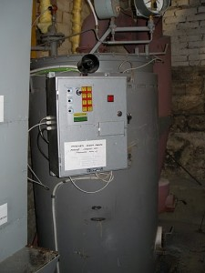

Мы производим паровые и водогрейные котлы, работающие на твердом топливе.
Наша продукция разработана по собственным проектам и успешно прошла эксплуатацию в промышленных условиях.
Мы проводим индивидуальную проектировку теплогенерирующих устройств и сопровождаем работу в течении гарантийного срока.
Наша продукция:
Водогрейный котел на твердом топлеве;
- Водогрейный котел одноконтурный для отопления производственных помещений
- Водогрейный котел двухконтурный для отопления и гарячего водоснабжения
Парогенератор на твердом топливе:
- Паровой котел одноконтурный (пар по замкнутому контуру)
- Паровой котел двухконтурный (пар на расход)
Продукция наших партнеров
Наша продукция не подлежит котлонадзору

Парогенератор